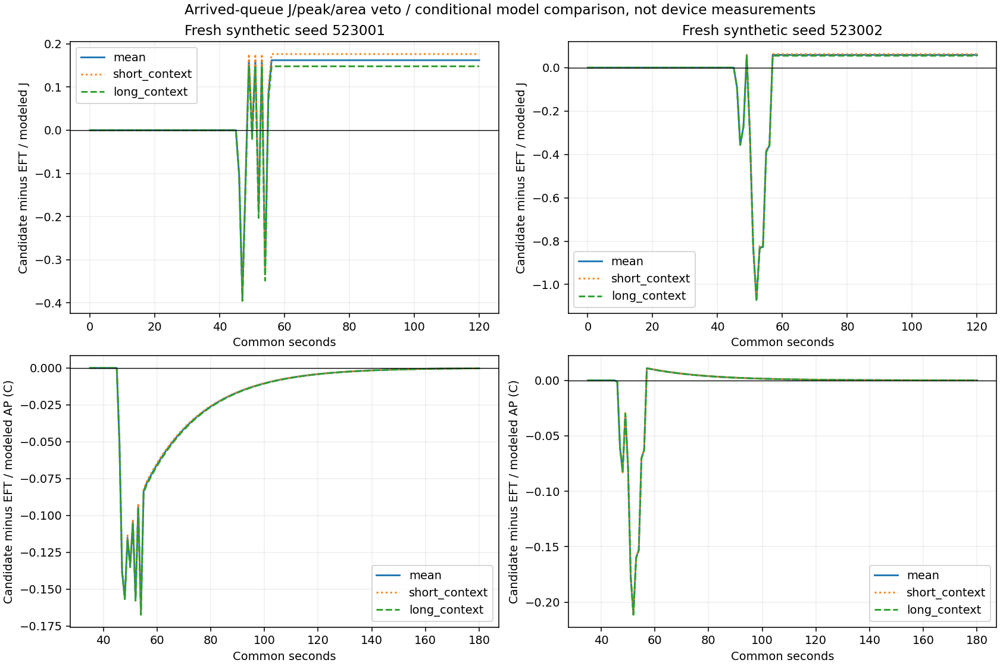

새 합성2seed×기존3문맥 모두48/48기한을지켰지만 AP 감소와 에너지 증가가 상충했습니다. 사후 개발 후보 하나의 PC 비교이며 실제 기기 절감·독립 확인·정확도 PASS가 아닙니다.
분류GPU 수와 CG_DC 겹침 감소의 J 항을 분리했습니다. 양의 에너지 차이와 음의 AP 차이를 숨기지 않습니다. callback PC 실행시간은 휴대폰 비용으로 환산하지 않으며 EFT timer 부재는null입니다. 그림은 모형끼리의 비교이고 센서 보간/실측 곡선이 아닙니다.
| seed | scenario | deadline_met | planned | delta_energy_j | delta_peak_ap_c | delta_thermal_degree_seconds | delta_urgent_p95_ms | delta_normal_mean_ms | delta_GPU_assignments | delta_pair_overlap_s | candidate_PC_callback_total_s | joint_nonworsening |
|---|---|---|---|---|---|---|---|---|---|---|---|---|
| 523001 | mean | 48 | 48 | 0.1621692849691101 | -0.1070843404052475 | -2.7407341466766937 | 440.271214 | 281.8364210000001 | -4 | -1.1830153089999982 | 1.8050867007113993 | False |
| 523001 | short_context | 48 | 48 | 0.17634734634859228 | -0.10567424109776269 | -2.703099654375322 | 455.71795699999996 | 281.7761601666666 | -4 | -1.1815690489999966 | 2.5366193992085755 | False |
| 523001 | long_context | 48 | 48 | 0.14796828677194185 | -0.1084905553869504 | -2.7779728025198906 | 424.8244719999999 | 281.8934749166665 | -4 | -1.184384602999998 | 2.7585426000878215 | False |
| 523002 | mean | 48 | 48 | 0.058767780203339726 | -0.020555267097357444 | -0.8405728021611409 | 85.41337399999998 | 1027.8075989166664 | -1 | -0.3569134190000014 | 2.766147299320437 | False |
| 523002 | short_context | 48 | 48 | 0.06263553352542317 | -0.020172025377451774 | -0.8318494147043758 | 100.86011700000006 | 1027.0434629166666 | -1 | -0.3576365500000023 | 2.7653397008543834 | False |
| 523002 | long_context | 48 | 48 | 0.0549114944495841 | -0.02094073400513352 | -0.8492849831199543 | 69.966632 | 1028.5653210833334 | -1 | -0.35622877199999436 | 2.6218693002592772 | False |

전체6대조·항별분해 · 해시·미확인 · 결론·재현·한계